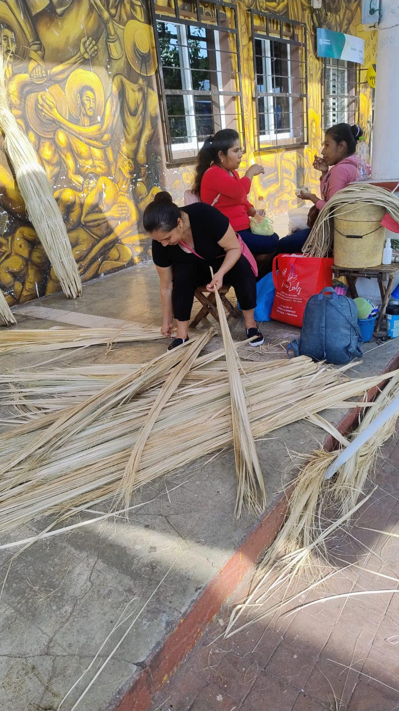
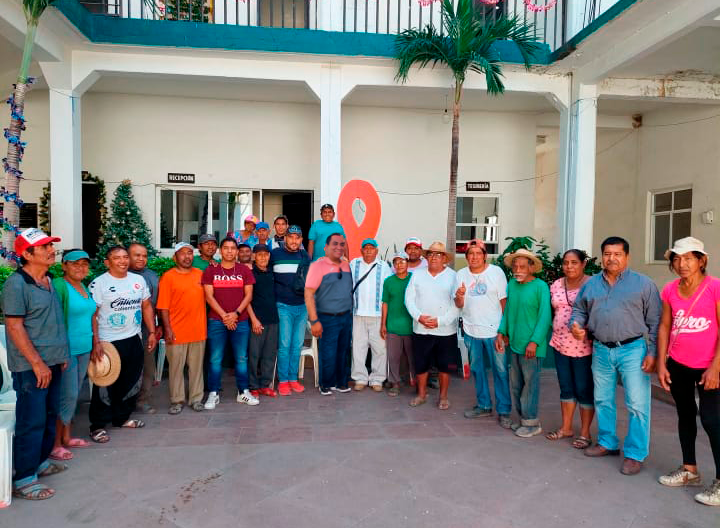

Introducción al Tejido de Palma
Conoce las técnicas tradicionales para iniciar la elaboración de sombreros artesanales con palma natural. Este taller está orientado a jóvenes de la comunidad interesados en preservar la herencia cultural de Tlapehuala.


Perfeccionamiento de Técnicas de Tejido
Diseñado para artesanos con experiencia que desean mejorar la calidad, rapidez y variedad de diseños. Incluye sesiones con maestros sombrereros locales y retroalimentación directa.
Innovación y Comercialización
Explora nuevas formas de diseño y promoción de los sombreros a través de redes sociales y plataformas de venta en línea. Se promueve la creación de una marca colectiva de identidad local.